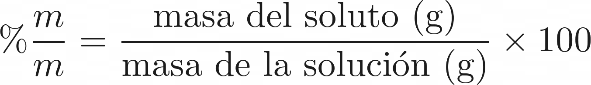
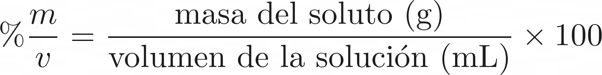
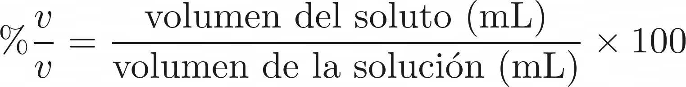
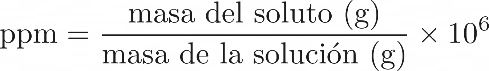
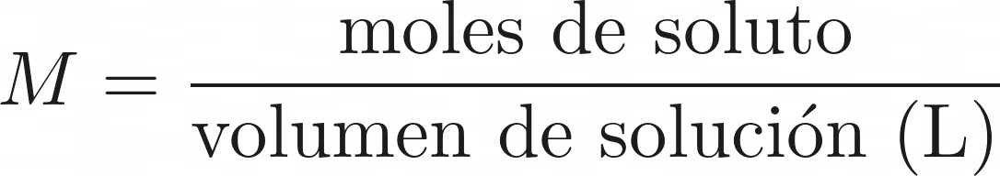
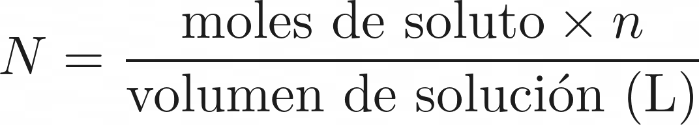
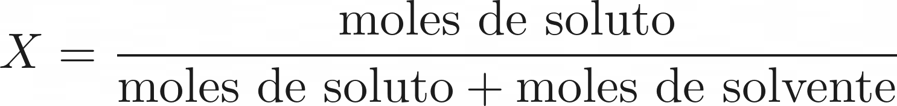

Resuelve cualquier ejercicio de %m/m, %m/v, %v/v, Partes por millón (ppm), Molaridad (M), Normalidad (N) y Fracción molar (X) de forma rápida y precisa. Cada sección incluye una introducción, fórmulas y una calculadora versátil + ejemplos reales.
El porcentaje masa/masa (%m/m) es una unidad de concentración que expresa los gramos de soluto presentes por cada 100 gramos de solución. Se calcula dividiendo la masa del soluto entre la masa total de la solución (soluto + solvente) y multiplicando.

Indica gramos de soluto por cada 100 mL de solución. Muy usada en soluciones líquidas (farmacia y laboratorio).

Expresa el volumen de soluto por cada 100mL de solución total. Común en mezclas de líquidos (alcohol, etc...).

1 ppm = 1 parte de soluto en 1 millón de partes de solución. Muy sensible para contaminantes y trazas.

Moles de soluto por litro de solución. Unidad más usada en química de soluciones.

Equivalentes de soluto por litro de solución. Depende del factor de equivalencia (n) según la reacción.

Proporción de moles de soluto respecto al total de moles en la solución (sin unidades, entre 0 y 1).
